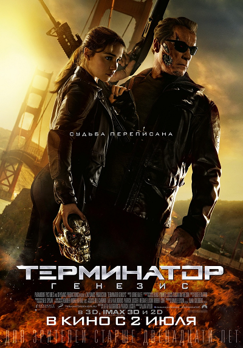
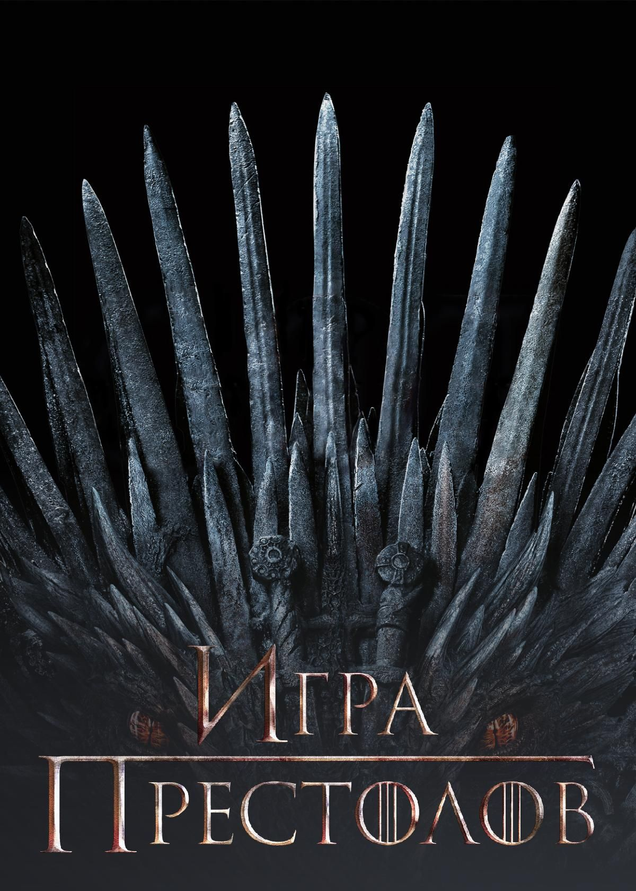
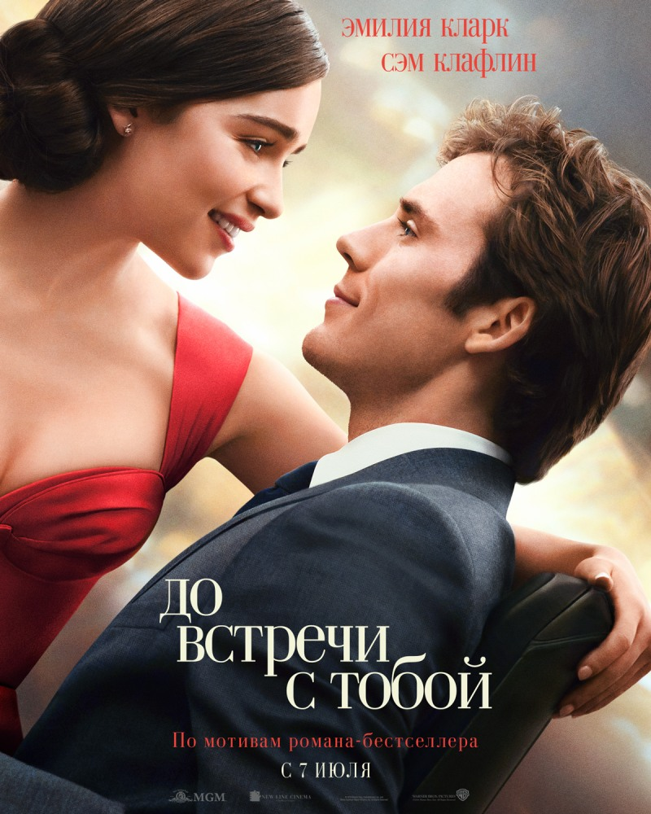

«Термина́тор: Генезис» — фантастический боевик режиссёра Алана Тейлора. Роли исполняют Арнольд Шварценеггер, Эмилия Кларк, Джейсон Кларк и Джай Кортни. Пятый кинофильм из серии «Терминатор». Премьера в России состоялась 2 июля 2015 года в формате RealD 3D и IMAX 3D.
Смотреть на Кинопоиск
«Игра́ престо́лов» (англ. Game of Thrones) — американский фэнтезийный драматический телесериал, созданный Дэвидом Бениоффом и Д. Б. Уайссом для кабельного телеканала HBO. Основан на цикле романов «Песнь льда и огня» Джорджа Р. Р. Мартина.
Смотреть на Кинопоиск
«До встречи с тобой» (англ. Me Before You) — британская мелодрама режиссёра Теа Шэррок по сюжету одноимённого романа Джоджо Мойес 2012 года. В фильме снимались: Эмилия Кларк, Сэм Клафлин, Дженна Коулман, Чарльз Дэнс, Мэттью Льюис, Бен Ллойд-Хьюз и Джанет Мактир. Фильм был выпущен на концерне «Warner Bros» 2 июня 2016 года.
Смотреть на Кинопоиск
Эмилия Изобел Юфимия Роуз Кларк[9] родилась 23 октября 1986 года, в Лондоне[3][10][11][12][13] и выросла в Беркшире[14][15][16]. Её отец работал звукорежиссёром в театре и был родом из Вулвергемптона, Уэст-Мидлендс[17], он умер от рака 10 июля 2016 года; мать, Дженнифер Кларк[18], является директором благотворительного фонда «Анима»[19]. У Эмилии также есть старший брат Беннетт[20], который был одним из операторов, снимавших «Игру престолов»[21]. Кларк проявила интерес к актёрскому мастерству в возрасте трёх лет после просмотра мюзикла «Плавучий театр[англ.]», над которым работал её отец[14]. Она обучалась в школе святого Антония[англ.] и в школе Сент-Эндрюс[англ.], которую окончила в 2005 году[22]. После она училась в Лондонском драматическом центре[англ.], который окончила в 2009 году[23][24].
Первое появление Эмилии Кларк в кино состоялось в 2009 году, в студенческом короткометражном фильме «Падение собаки»[25]. Её первая телевизионная роль — Саския Майер в эпизоде британского телесериала «Врачи[англ.]». В 2010 году Кларк получила роль Дейенерис Таргариен в фэнтези-сериале канала НВО «Игра престолов», основанного на серии книг «Песнь Льда и Огня» Джорджа Р. Р. Мартина. В этом сериале она заменила актрису Тамзин Мерчант[26]. В одном из интервью актриса заявила, что во время своего прослушивания она исполнила танец маленьких утят и танец робота[англ.][27]. Сериал дебютировал в апреле 2011 года и получил положительные отзывы, а также был продлён на второй сезон[28]. В 2011 году Эмилия Кларк выиграла награду «EWwy Awards» в номинации «Лучшая женская роль — драма» за роль Дейенерис[29]. В 2013 году Кларк была номинирована на премию «Эмми» в категории «Лучшая женская роль второго плана в драматическом сериале»[30]. Она была снова номинирована на премию «Эмми» в 2015, 2016 и 2019 годах[31]. Эмилия Кларк получила положительные отзывы от критиков за свою роль в телесериале «Игра престолов». Мэтью Гилберт из Boston Globe назвал её роль «завораживающей», добавив, что «у Эмилии Кларк нет большого простора в плане эмоций в работе над ролью Дейенерис, кроме ожесточённой решимости, — тем не менее она трудолюбиво работает над ролью»[32]. Тодд Вандервиф для сайта The A.V. Club прокомментировал трудность адаптации такого перехода от страницы к экрану[33]. В 2017 году Эмилия Кларк стала одной из самых высокооплачиваемых актрис на телевидении, зарабатывая $2 млн за один эпизод «Игры престолов»[34][35]. В 2012 году Кларк появилась в картине «Спайк Айленд[англ.]», фильм назван в честь британской рок-группы The Stone Roses[36]. С марта по апрель 2013 года Кларк играла Холли Голайтли в бродвейской постановке «Завтрак у Тиффани[англ.]»[37], в том же году она снялась в фильме «Дом Хемингуэй» вместе с Джудом Лоу. Реакция критиков на фильм была в основном положительная, хотя он стал коммерческим провалом[38][39]. В мае 2014 года было объявлено, что актриса снимется в фильме «Сад последних дней» вместе с Джеймсом Франко[40], но фильм был отменён за две недели до начала съёмок. Эмилии Кларк предложили роль Анастейши Стил в фильме «Пятьдесят оттенков серого» (2015), но она отказалась от этой роли из-за обнажённых сцен[41]. Она также сыграла Сару Коннор в фильме «Терминатор: Генезис» (2015) вместе с Арнольдом Шварценеггером, Джаем Кортни и Джейсоном Кларком[42]. Фильм собрал в прокате более $400 млн по всему миру, но не получил благоприятных отзывов от критиков[43], несмотря на это она получила номинацию на премию «Teen Choice Awards». В 2016 году Эмилия Кларк снялась в главной женской роли вместе с Сэмом Клафлином в фильме-адаптации бестселлера с одноимённым названием «До встречи с тобой», который был выпущен 3 июня 2016 года[44]. Фильм имел коммерческий успех, собрав более $200 млн по всему миру, и получил высокий рейтинг на сайте Rotten Tomatoes[45][46]. За свою роль в этом фильме она получила номинации на премии «Teen Choice Awards» и «MTV Movie Awards». Кларк играла ведущую роль няни Верены в фильме «Голос из камня», который был выпущен в апреле 2017 года[47][48]. В конце 2016 года стало известно, что Эмилия Кларк снимется в новом фильме вселенной «Звёздных войн» о молодом Хане Соло[49]. В августе 2017 стало известно имя героини Кларк в фильме — Ки’ра[50]. Выход фильма состоялся 24 мая 2018 года[51]. 29 декабря 2023 года Эмилия Кларк вместе со своей матерью Дженнифер стала кавалером ордена Британской империи за создание благотворительной организации SameYou, занимающейся оказанием помощи людям, восстанавливающимся после повреждений головного мозга[52].
С сентября 2012 года Эмилия Кларк встречалась с Сетом Макфарлейном[53], в марте 2013 года было объявлено о разрыве их отношений[54]. C октября 2015 года Кларк проживала в Хэмпстеде, Лондон[55]. В 2016 году она приобрела дом в Венис-Бич[англ.], Лос-Анджелес[56]. Эмилия Кларк была признана самой желанной женщиной мира по версии журнала AskMen[англ.] в 2014 году[57]. Она также была названа журналом Esquire самой красивой женщиной в мире в 2015 году[58]. Журнал Screen International[англ.] назвал её одной из «будущих британских звёзд»[59]. 8 марта 2017 года Кларк получила награду от сайта HuffPost как самый активный борец за права женщин во всем мире[60]. 13 июля 2017 года в интервью журналу Rolling Stone актриса рассказала о том, как роль в телесериале «Игра престолов» превратила её в феминистку[61]. В статье для The New Yorker за март 2019 года она рассказала, что у неё было субарахноидальное кровоизлияние, форма инсульта, вызванное разрывом аневризмы, в 2011 году. Она перенесла срочную эндоваскулярную операцию и впоследствии страдала афазией, в какой-то момент она не могла вспомнить даже собственное имя. У неё была вторая аневризма, которую вылечили хирургически в 2013 году[1].